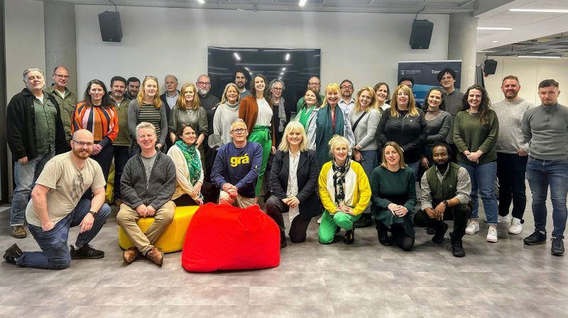
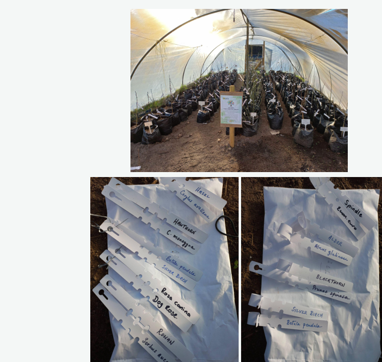
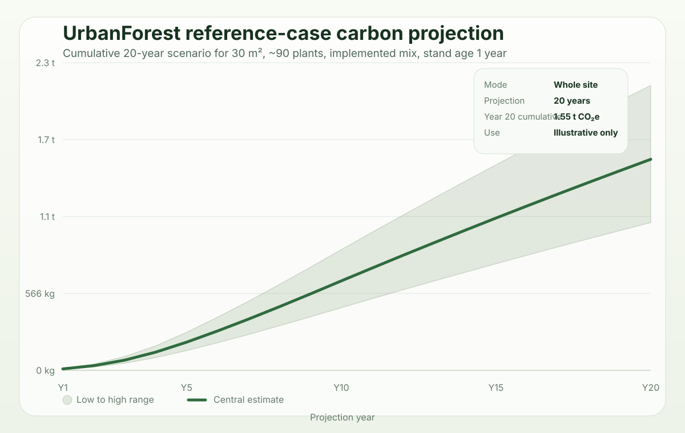
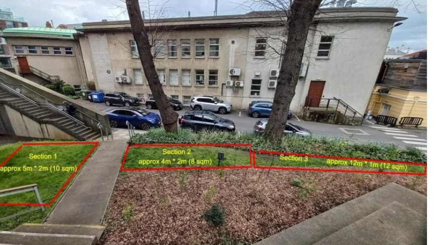
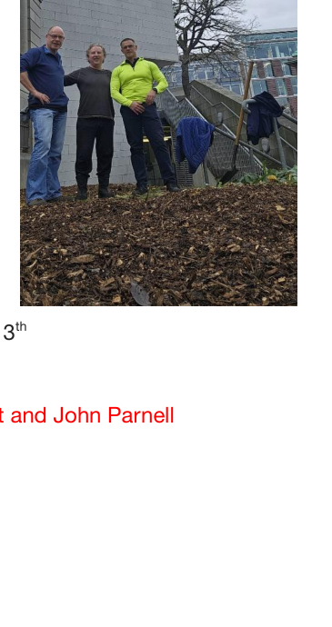
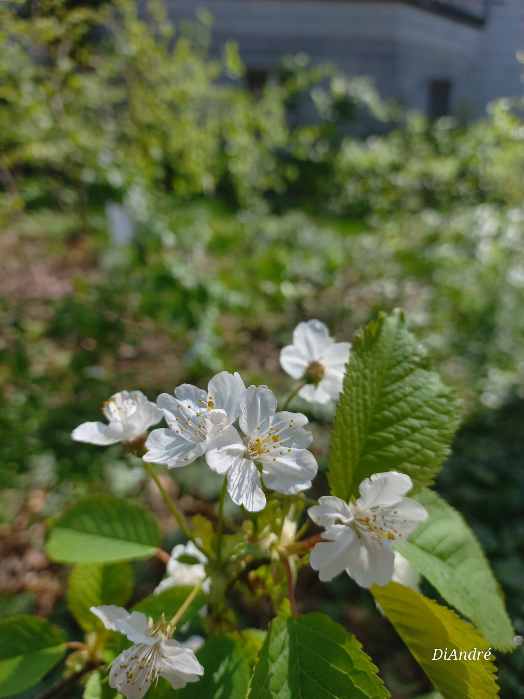
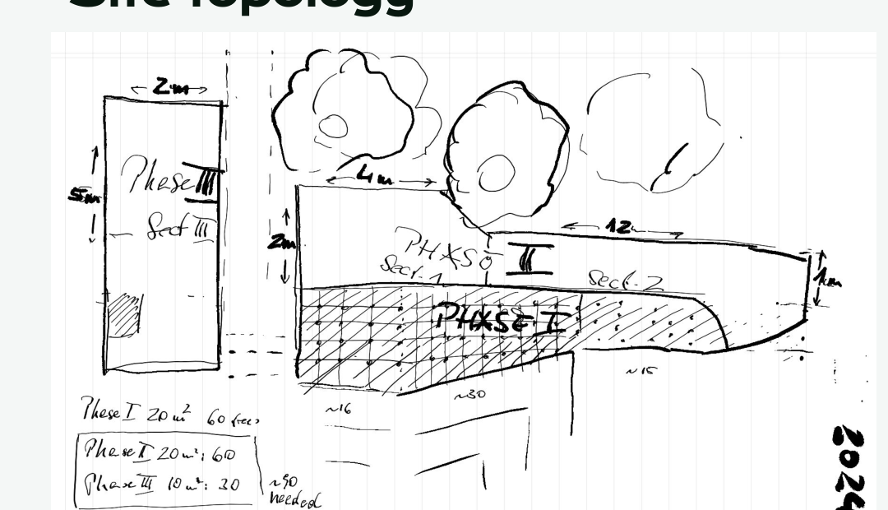
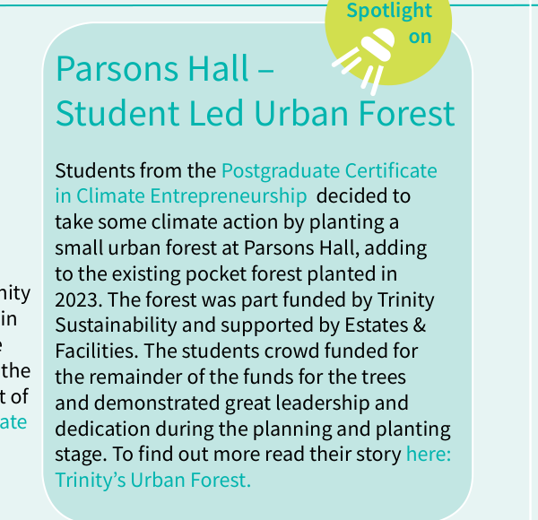

Funding model
50 / 50
Trinity funded half of the project and the class raised the other half through GoFundMe.
Student-led ecological action at Trinity College Dublin
A Miyawaki-inspired campus intervention at Parsons Hall that moved from proposal to preparation, planting, public recognition, and a next-step design trajectory toward Cradle-Based Syntrophic Miyawaki.

Funding model
Trinity funded half of the project and the class raised the other half through GoFundMe.
Ground preparation
Coffee grounds were laid across the planting footprint before cardboard and mulch were added.
Mulch layer
The site was heavily mulched, making the intervention materially visible rather than merely conceptual.
Density target
Phase 2 and 3 were designed to match the density of the existing pocket-forest section.
This was not just tree planting. It combined biodiversity action, climate entrepreneurship, campus visibility, and a practical demonstration of what a small but deliberate urban intervention can achieve.
The site shows a replicable delivery path: assess, prepare, plant densely, document, recognise, and then evolve the design rather than stopping at implementation.
UrbanForest functions as a case-study microsite. It explains process, evidences milestones, archives sources, and bridges directly into future work.
Project story
The Urban Forest project grew out of the Trinity Climate Entrepreneurship cohort. Inspired by the existing pocket forest at Parsons Hall, the team proposed extending the planted footprint by a further 30 square metres using a Miyawaki-style dense native mix.
The result was a real delivery sequence: proposal, fundraising, site preparation, planting, establishment, and then public recognition. That matters because the site demonstrates how a modest intervention can still be professionally documented.
Rather than ending with planting day, the experience fed directly into a broader design proposition: Cradle-Based Syntrophic Miyawaki, linking implementation to a more ambitious research and practice trajectory.
Method
The site was developed as a compact, dense native planting system. The logic was to work with site conditions, prepare the soil biologically, plant intensively, and create a resilient patch that is educational as well as ecological.
Parsons Hall offered visibility, access, and continuity with the existing pocket forest. The framing explicitly considered soil, sunlight, and accessibility.
The proposal positioned the extension as biodiversity enhancement, a living educational asset, and a practical climate-action intervention.
Funding was assembled from institutional support and class fundraising, while the native trees and shrubs were sourced from Sonairte.ie, the not-for-profit organisation in Laytown, County Meath.
The site was prepared with 90 kg of coffee grounds donated by Poppies Enniskerry, followed by cardboard and a deep mulch layer, giving the project a visible material logic rather than an abstract method note.
The final planting combined native shrubs and trees with an emphasis on dense establishment rather than sparse ornamental layout.
The slides already anticipated baseline instrumentation, public education, website creation, monitoring, and eventual handover into operational stewardship.
Species and structure
The documents distinguish between the broader candidate palette in the proposal and the final implemented mix recorded after planting.
Implemented shrubs
Implemented trees

Milestones
The initial proposal sets out the extension, objectives, methodology, density logic, and timeline.
Slides list fundraising, tree organisation, instrumentation, public education, website creation, planting, monitoring, and handover logic.
90 kg of coffee grounds donated by Poppies Enniskerry are applied across the footprint, followed by cardboard and 3 tons of mulch.
The cohort plants the site with the final native shrubs and trees sourced through Sonairte.ie.
Internal documentation, public coverage, and the annual-report spotlight frame the project as a visible campus biodiversity success.
The practical experience becomes a stepping stone to Cradle-Based Syntrophic Miyawaki as the next design proposition.
Carbon scenario explorer
This interactive tool starts from the Parsons Hall reference case: a roughly 30 m² extension with an intended density of about 90 plants, or about 3 plants per m². It then lets you vary footprint, density, planting emphasis, and current stand age to explore how a dense mixed urban forest might perform over the next 20 years. It is designed as an explanatory scenario tool, not as a carbon-credit calculator.
The underlying literature and source documents are listed on the reference page.

Visual evidence
A compact visual record of the UrbanForest process: site baseline, preparation, living result, spatial thinking, and institutional recognition.





Human value
Beyond environmental impact, the Urban Forest also became a place with emotional and social meaning. Its value was not only ecological. It was also practical, social, psychological, and memorable.
A place not just a project
Beyond biodiversity and climate value, the Urban Forest also carried a human benefit. Working together on a real physical place strengthened our sense of agency, brought the cohort closer, and turned an idea into something tangible and lasting.
That mattered because it was no longer just a proposal on paper. It became a place we had made with our own hands. In that sense, the project left behind more than a planted site. It also left many of us feeling mentally rewarded, more connected, and more hopeful.
Shared experience
The project demonstrated something quietly powerful: even within a large institution, collective effort can still produce something real, visible, and alive. That experience gave the work a psychological dimension that cannot be reduced to carbon, species lists, or square metres alone.
It also gave the cohort a form of shared legacy. The result was not only environmental improvement, but a stronger sense that practical action, patience, and collaboration can indeed alter a place for the better.
Human benefit framework
These are not clinical claims. They are practical, experience-based dimensions of taking part in a living campus intervention.
The work made environmental action feel local, practical, and achievable. The site became proof that change can begin at human scale.
The cohort shared effort, weather, soil, humour, and uncertainty. That kind of collaboration creates social meaning.
A living patch on campus can invite small moments of pause, curiosity, sensory attention, and noticing.
The forest remains after the module and the event. It keeps growing as a living memory of shared practical action.
Possible next layer
Students, staff, visitors, and neighbours are invited to share a short reflection on what the Urban Forest made them notice, feel, learn, or discuss. You might write about calm, curiosity, connection, biodiversity, place, or the simple experience of seeing something living take root on campus.
Please keep reflections respectful and suitable for publication. Avoid sensitive personal information or identifiable details about other people.
Evidence base
This demo is designed as an evidence-rich microsite rather than a light project page. Internal documents and public sources are both visible.